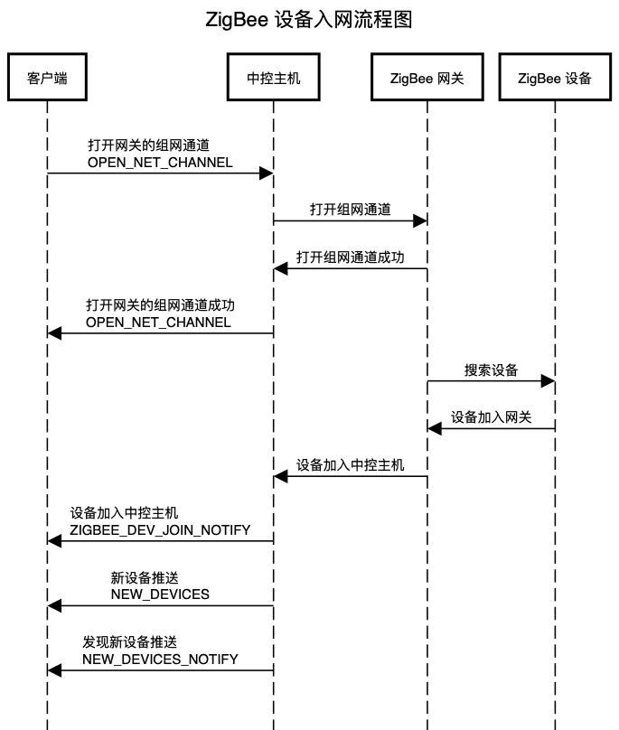

ZigBee 设备入网流程¶
ZigBee 设备入网的现象是 ZigBee 设备被加入到主机，从而可以通过主机查询到设备的数据、控制设备等。
本质是 ZigBee 设备加入 ZigBee 网关，而网关又是挂载在主机上的，主机通过网关获取 ZigBee 设备的数据、控制设备等。
根据名词解释章节的说明，网关是负责 ZigBee/TCP 协议的转换的，于是客户端控制 ZigBee 设备时不需要直接与 ZigBee 设备通讯，而是通过“客户端 <-> 主机 <-> 网关 <-> 设备”这个链路实现的。
新设备推送¶
opcode: NEW_DEVICES
如果设备之前不在主机内，或者之前在主机内但是其房间 id 为 -1，那么中控会再推送一条新设备报文，报文中包含设备的详细，客户端解析报文，更新数据库之后通知上层，上层重新查询数据库，即可得知刚刚入网的设备的信息。
发现新设备推送¶
opcode: NEW_DEVICES_NOTIFY
新设备推送到达的时机有两个：
执行同步数据操作之后，主机会向客户端发送一条新设备推送
NEW_DEVICES，此时客户端只需要解析新设备数据，全部存入本地数据库即可，此操作无发现新设备推送NEW_DEVICES_NOTIFY设备配置发生变更 30 秒之后，此时客户端的数据库内已有数据，需要将新的新设备报文和本地数据库内的数据做对比，只更新有变化的部分，此操作有发现新设备推送
NEW_DEVICES_NOTIFY
流程图¶
